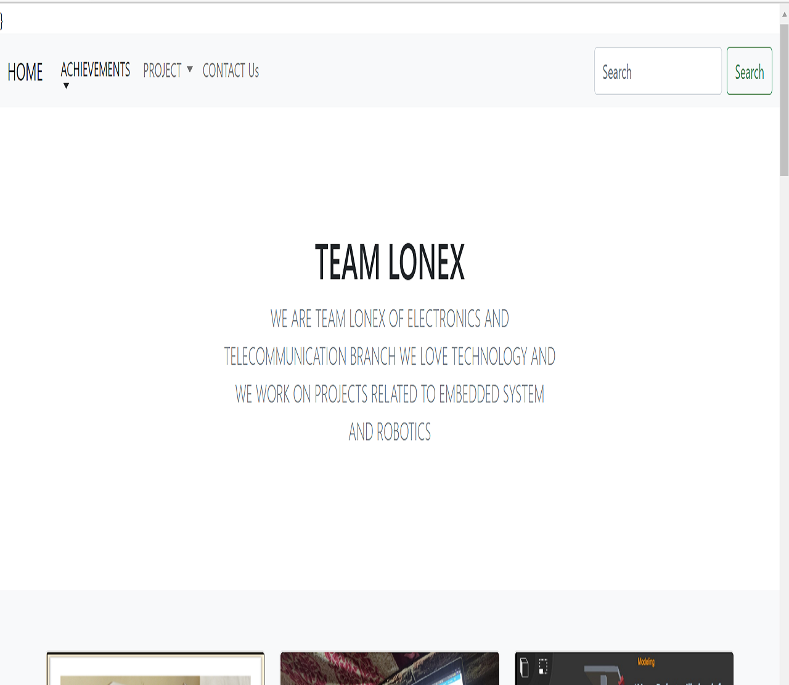
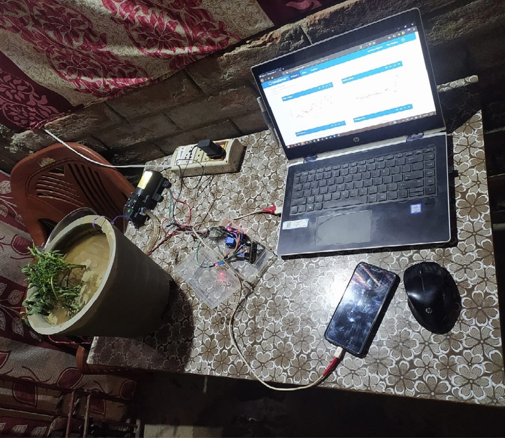
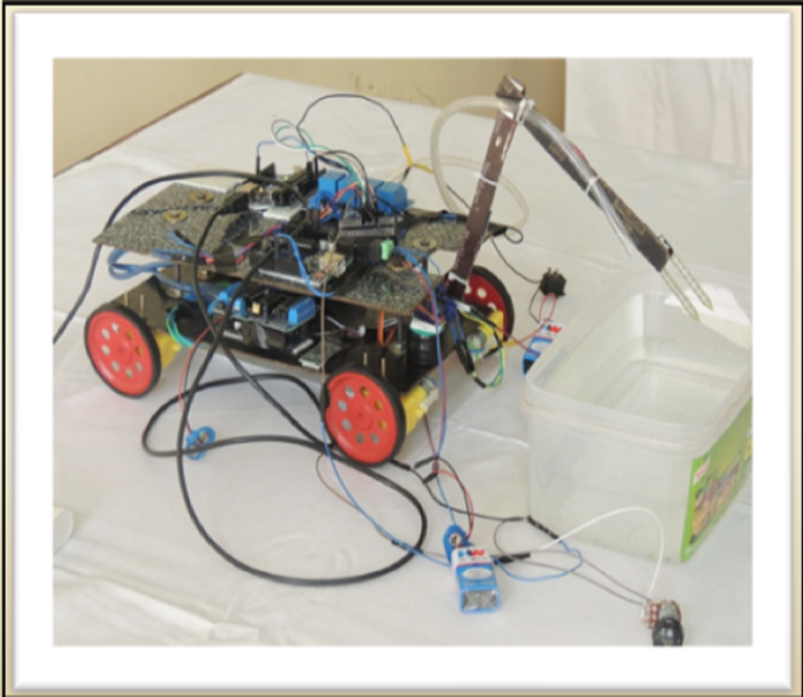

SMART HELMET
Our solution consists of a modified helmet, in which we will be adding a few safety and smart mechanisms for minimizing the risk and impact of accidents and also easing the driving experience. By technology we increase the safety of the rider, it will ultimately reduce the accident and increase road safety
Read More...

BLOG
blogs provide commentary on a particular subject or topic, ranging from philosophy, religion, and arts to science, politics, and sports. Others function as more personal online diaries or online brand advertising of a particular individual or company. A typical blog combines text, digital images, and links. 'blogging' are now used for content creation
Read More...

PLANT HEALTH MONITORING SYSTEM
Plant health revolves around a few factors, which we aim to monitor in this project, while some of the features of our project, like watering the plant will be commanded to the system by the plant owner himself and owner can monitor humidity temperature moister in soil in his smartphone and can command.
Read More...
STAIR CLIMBING
When Robot climbs the stairs, the 3rd & 4th ultrasonic sensor are used to detect obstacles. Whether the obstacle detected is climbable or not, it will verify through the 1st ultrasonic sensor. If it the obstacle turns out to be climbable, like stairs, then it climbs and cross the obstacle.
Read More...

AGRI BOT
Agri-robo is multi tasking agriculture robot which helps us to perform to, do several task in agriculture field. The aim of the robot is to increase work rate and to decrease man Power ,which also reduces working time.And it increases the crop production,so the profit is automatically increases.
Read More...LINE FOLLOWER
A Line Follower Robot, as the name suggests, is an automated guided vehicle, which follow a visual line embedded on the floor or ceiling. Usually, the visual line is the path in which the line follower robot goes and it will be a black line on a white surface it will detect run on line.
Read More...